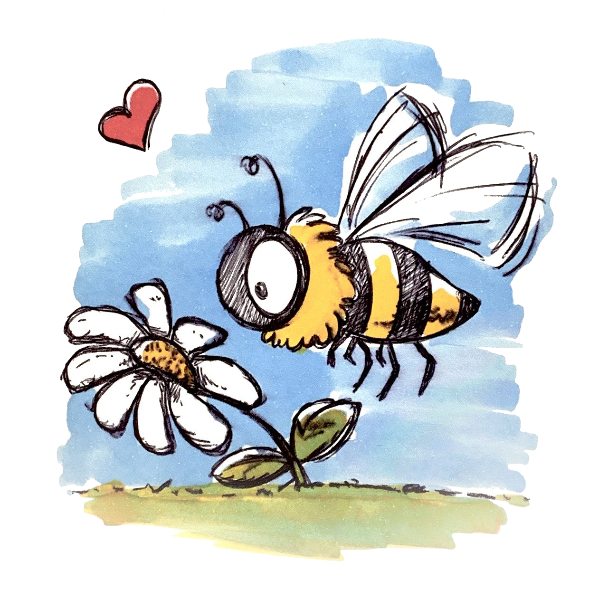

Image by Richard Duijnstee from Pixabay
The Bees Need You!
Pesticides significantly contribute to the decline of the Bee popultion. According to a Greenpeace article entitled Save the Bees, "Biologists have found more than 150 different chemical residues in bee pollen". When you remember that Honeybees pollinate more then a 100 of the crops we eat it is frightening to consider what would happen without them. Supporting organic farming policies is crucial to saving the bees and securing our food supply.